Overview
We wanted to predict how much each product would sell at each store so the retailer can plan demand.
- BigMart records item-level sales across outlets to forecast demand and understand what drives revenue.
- Goal: predict ItemOutletSales for products at different stores, a continuous-target regression task.
- Train data has both inputs and the sales target; the held-out test set must have its sales predicted.
- Beyond accuracy, the aim was an interpretable model that explains which factors lift or lower sales.
- Findings should translate into stocking and store-strategy recommendations management can act on.
Methodology
flowchart LR A[Raw Data] --> B[Clean & Encode] B --> C[EDA] C --> D[Train/Test Split] D --> E["Linear Regression"] E --> F["Tune (Cross-Validation)"] F --> G["Evaluate: R2 / RMSE"]
The Data
We used two store-sales tables and cleaned up messy categories and missing entries before modeling.
- Train set of 8,523 rows and 10 columns; separate test set of 5,681 rows to predict on.
- ID columns ItemIdentifier and OutletIdentifier were dropped as they carry no predictive power.
- ItemWeight was ~17% missing and OutletSize ~28% missing, requiring careful imputation.
- ItemFatContent had inconsistent labels (low fat, LF, reg) standardized to Low Fat and Regular.
- Mix of numeric (ItemMRP, ItemVisibility, ItemWeight) and categorical (ItemType, OutletType) features.
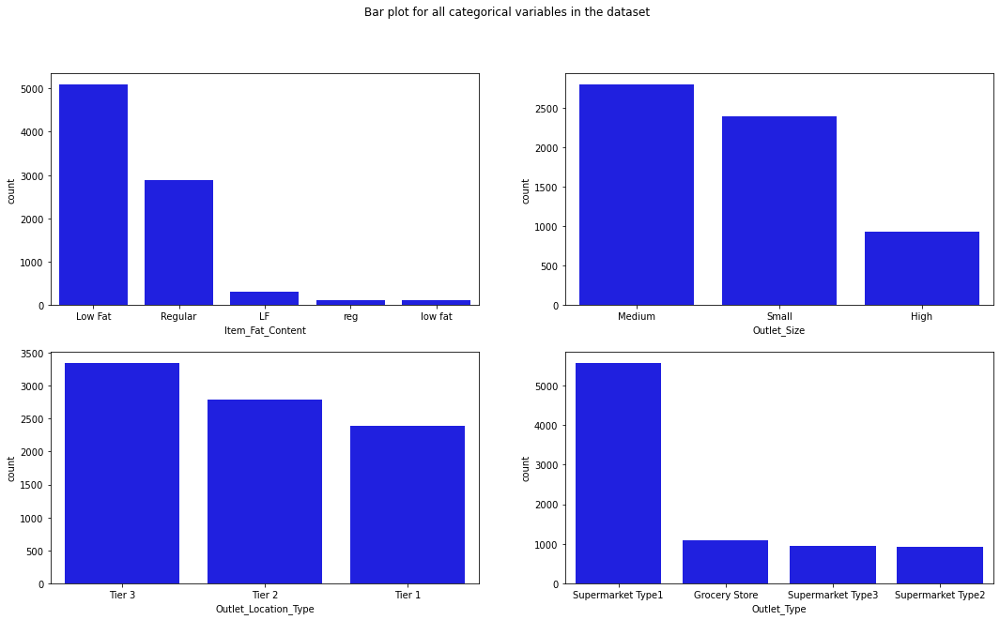
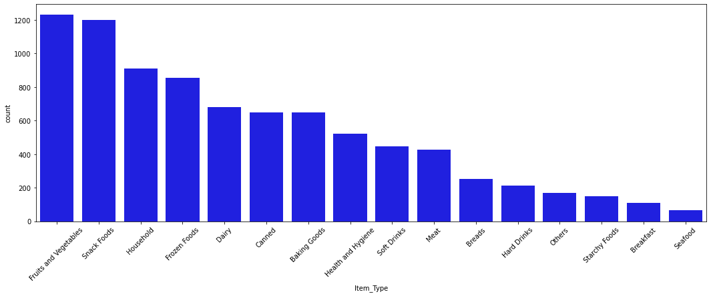
Exploratory Analysis
We charted each variable and how they relate, finding price is the main thing tied to sales.
- Univariate plots show Fruits and Vegetables, Snack Foods, and Household are the top-selling item types.
- ItemVisibility is right-skewed while ItemWeight is roughly uniform across its range.
- Average sales are nearly flat across outlet establishment years, with a dip in 1998.
- Correlation heatmap shows only ItemMRP has a moderate linear relationship with ItemOutletSales.
- Scatter plots confirm ItemWeight and ItemVisibility show little to no relationship with sales.
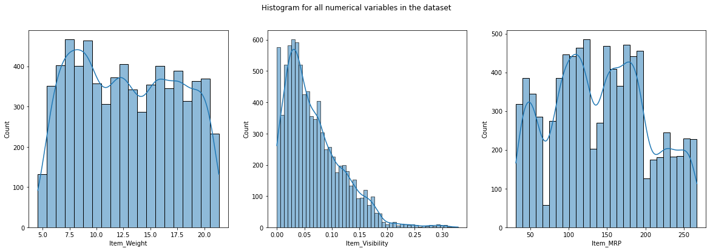
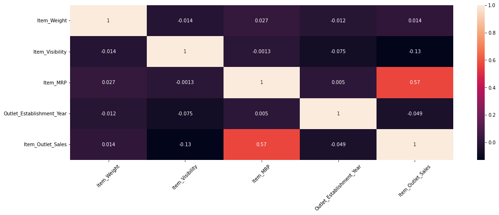
Key Drivers of Sales
Item price and store type were the strongest factors pushing sales up or down.
- ItemMRP is the dominant driver: higher-priced items sell at much higher value (coefficient 1.9555).
- Supermarket Type 3 outlets have the largest sales lift (coefficient 2.4837) over the baseline store.
- Supermarket Type 1 and Type 2 also boost sales (coefficients 1.9550 and 1.7737 in log scale).
- OutletAge was dropped for high VIF; ItemWeight, ItemVisibility, OutletSize, location were insignificant.
- Final features all clear p < 0.05 and VIF < 5, confirming significant, non-collinear predictors.
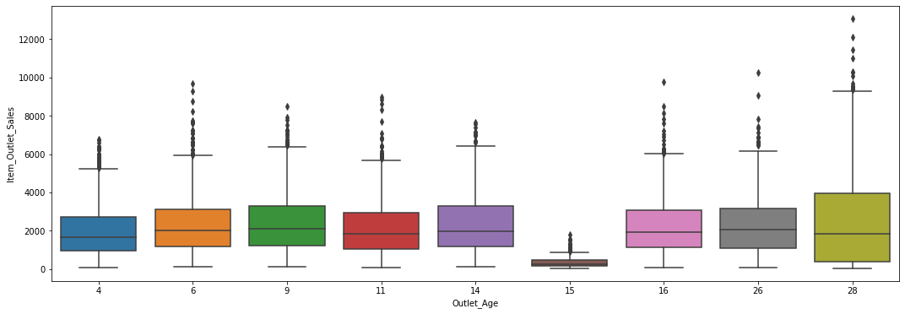
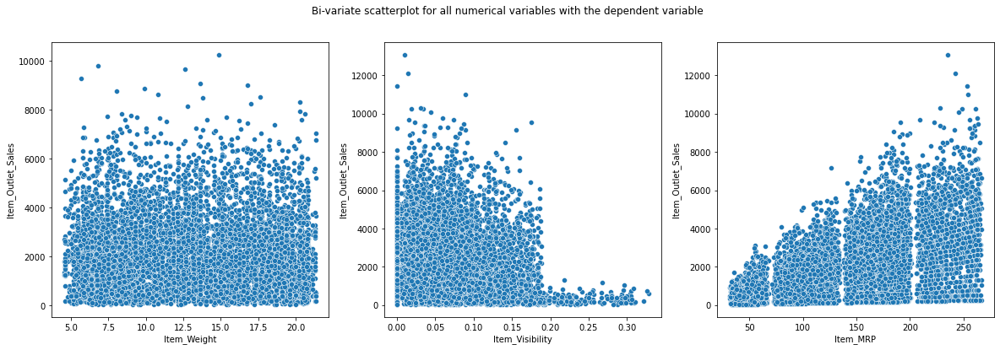
Modeling & Results
A log-transformed linear regression met all statistical assumptions and predicted sales reliably.
- Built ordinary least squares regression with statsmodels after dummy-encoding and scaling features.
- Initial model reached R-squared 0.563; log-transforming the target raised it to 0.720.
- Log transform fixed the linearity issue; residuals are mean-zero, normal, and homoscedastic.
- Cross-validation R-squared of 0.718 (MSE 0.290) matches training, indicating a well-generalized fit.
- Final equation predicts log(ItemOutletSales) from ItemMRP, OutletType, and ItemFatContent.
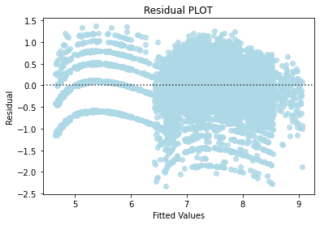
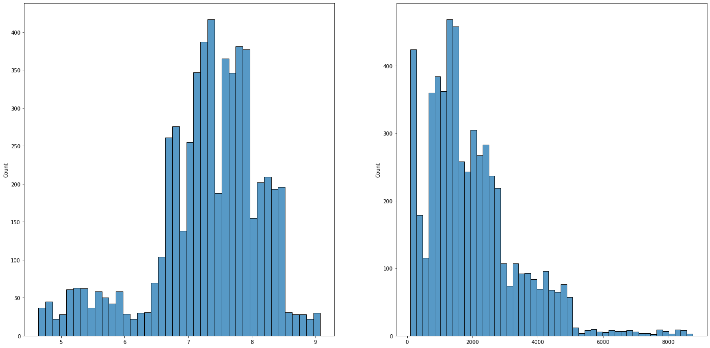
Key Takeaways
Stock high-priced items in visible spots and grow large supermarket-type stores to raise sales.
- ItemMRP is the single biggest lever: stocking higher-MRP items in high-visibility areas can lift sales.
- Large Supermarket Type 3 stores outsell all other outlet types and warrant continued investment.
- Validated all regression assumptions, giving a transparent, defensible model for business decisions.
- Non-linear models could capture remaining patterns and improve beyond the linear baseline in future.
- Built with: pandas, numpy, matplotlib, seaborn, statsmodels, scikit-learn, scipy.
More Visualizations
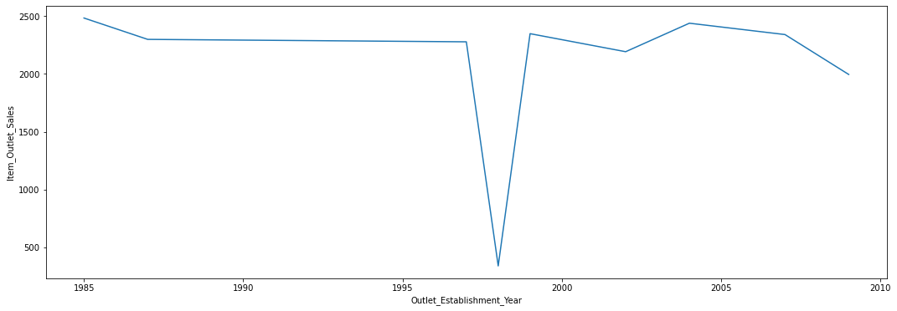
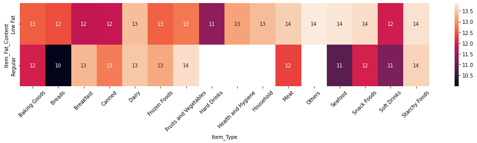
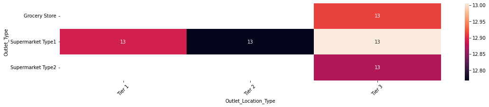
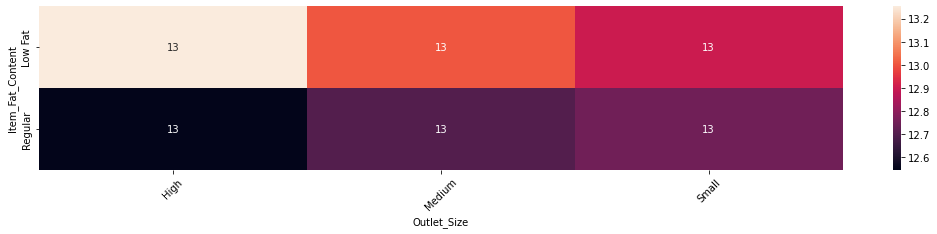
Tech Stack
- pandas — data wrangling and tabular manipulation
- numpy — fast numerical arrays
- scikit-learn — modeling, pipelines, and evaluation
- seaborn — statistical visualization
- matplotlib — plotting
- statsmodels — OLS / statistical inference & VIF
Attribution
This project was completed as part of the MIT Applied Data Science Program (MIT IDSS / Great Learning). The program provided the case-study scaffolding; the analysis, code, and results are my own. Published with permission, for portfolio use only.